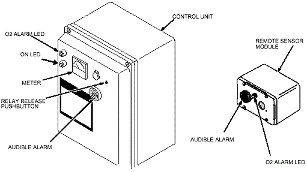
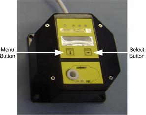
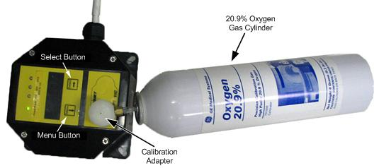

Operating Documentation
Direction 5670006, Rev# 1
Discovery MR750w GEM Service Methods
Module Version 4.0, Version Date 7/14/11
Operating Documentation |
| Required Persons | Preliminary Reqs | Procedure | Finalization |
|---|---|---|---|
| 1 | Not Applicable | 15 to 30 | Not Applicable |
The two procedures in this document describe how to perform oxygen monitor system calibration using an Oxygen Monitor Calibration Kit for the following oxygen monitor systems:
Older ISA-42M oxygen monitor system Oxygen Monitor System Calibration for ISA-42M
Newer ISA-60M oxygen monitor system Oxygen Monitor System Calibration for ISA-60M
Calibration is the process of setting an oxygen monitor remote sensor to read accurately when exposed to a target gas.
| Item | Qty | Effectivity | Part# | Manufacturer | |
|---|---|---|---|---|---|
| Oxygen Monitor Calibration Kit with adapters (for both ISA-42M and ISA-60M) | 1 | - | 5399042 | - | |
| Small, Flat-blade Screwdriver | 1 | - | - | - | |
This procedure checks the ISA-42M oxygen monitor system operation when the oxygen level is at 20.9% (normal air) and when it is reduced to less than 19.5% (alarm point). The assumption is that a Sensor Retrofit Kit P/N 46-301672P3 was installed on the Remote Sensor Module. The new five-year Oxygen Sensor (GE P/N 5339912) consists of a sensor cell, a battery, and a PC board with conversion circuitry contained in an RF-shielded enclosure. The procedure is the same for the 46-301672P3 or the new 5339912 Oxygen Sensor.
Illustration 1: ISA-42M Oxygen Monitor Control Unit

This functional check uses the newer Aerosol Gas Calibration Kit 5399042. The kit includes two aerosol containers filled with oxygen and a nitrogen balance: one with 20.9% oxygen, and one with 18.5% oxygen. These aerosol containers are constructed of aluminum and can be brought safely into the Scan Room.
There are two oxygen monitor calibration adapters included in the Calibration Kit; the black adapter is for use for the ISA-42M oxygen monitor system.
These aerosol containers can be used for several calibrations if removed after a 15-second use, which is a normal test time.
| ||||
| Mark the aerosol container label after each test where indicated so that filled containers may be distinguished from those empty or almost empty. | ||||
To conserve gas, a known volume of a gas mixture must be trapped between the calibration adapter and the oxygen sensor. To properly accomplish this, an O-ring is included with the 5339912 Oxygen Sensor kit and must be permanently installed in the oxygen sensor port. The O-ring should be placed by hand or with needle-nose pliers at the bottom of the threaded retrofit block firmly against the foam ring of the oxygen sensor. Refer to the illustration below for placement details.
Illustration 2: Remote Sensor Components

Turn on power to the Oxygen Monitor Control Unit. The green power LED should glow.
| ||||
| For the next step, the Remote Sensor Module must contain a Sensor Retrofit Kit 46-320936P2. If missing, order and install before continuing. | ||||
Screw the black Aerosol Gas Calibration Adapter from the Calibration Kit into the gas sensing port (which contains the retrofit plate) located on the front cover of the Remote Sensor Module as shown below.
Illustration 3: Attaching Calibration Tool to Remote Sensor Port

Attach the aerosol container marked 20.9% Oxygen found in the Oxygen Calibration Kit to the oxygen monitor calibration adapter as follows. (Refer to Illustration 5 and Illustration 6.)
Remove the cap from the aerosol container and insert the nozzle at the top of the can into the oxygen monitor calibration adapter.
Snap the container onto the plastic fingers of the adapter by attaching it at an angle.
Apply moderate force until the aerosol container snaps into place. When properly attached, the automatic gas discharge will be audible.
Illustration 4: Attaching Calibration Tool to Oxygen Sensor Port
Illustration 5: Inserting Aerosol Container into Calibration Adapter

Illustration 6: Aerosol Container Snapped into Place

| NOTE: | Because of the potentially alarming sound made by the Sonalert, it may be disabled during testing by disconnecting its red wire. Be sure to reconnect the wire after testing. Attaching a 10K resistor in series with the Sonalert permits audible alarm operation at a reduced volume. |
Wait approximately 15 seconds before removing the 20.9% oxygen aerosol container.
Verify the meter (shown below) reads 20.9% oxygen.
Illustration 7: Control Unit Meter

Remove the aerosol container by tilting it at an angle until it snaps free from the calibration adapter, or leave it in place for continuous gas discharge. (Continuous discharge offers the highest accuracy while gas is available in the aerosol container.)
If removed before empty, retain for possible future tests. If empty, manage disposal in accordance with the terms and conditions established by the customer. Dispose in a proper manner, in compliance with local requirements.
Attach the aerosol container marked 18.5% Oxygen found in the Oxygen Calibration Kit to the oxygen monitor calibration adapter as follows.
| NOTE: | If the alarm level is being changed for the first time from 18.0% to 19.5%, refer to the Oxygen Monitor Safety information for additional instructions. |
Remove the cap from the aerosol container and insert the nozzle at the top of the can into the oxygen monitor calibration adapter. (See Illustration 3 through Illustration 6.)
Snap the container onto the plastic fingers of the adapter by attaching it at an angle.
Apply moderate force until the aerosol container snaps into place. When properly attached, the automatic gas discharge will be audible.
Leave the 18.5% oxygen aerosol container attached to the Remote Sensor Module for approximately 15 seconds. The meter reading should decrease to less than 19.5%. When it does, verify that it triggers the following indications as it crosses the 19.5% threshold:
An audible alarm should sound on the Control Unit and Remote Sensor (unless disabled earlier.)
A red alarm LED should blink on both the Control Unit and the Remote Sensor.
Continue watching the meter to verify that it decreases to less than 19.5%.
Disconnect the 18.5% aerosol container from the Remote Sensor Module after 15 seconds total.
| ||||
| Unscrewing the oxygen monitor calibration adapter from the Remote Sensor Module allows rapid diffusion of ambient oxygen to reach the sensor cell. To prevent unnecessary gas waste, unscrew adapter only if aerosol container is removed. | ||||
Disconnect the oxygen monitor calibration adapter to allow the ambient air with normal oxygen content to contact the sensor.
Retain the 18.5% Aerosol Container for possible future tests.
Press the Relay Release pushbutton on the front cover of the Control Unit shown in Illustration 7. The following should occur:
The meter on the Control Unit should read approximately 20.9%.
Audible alarms should stop sounding.
Red alarm LEDs should stop blinking and should stay off.
If the system responds correctly as described, the calibration check is complete. Otherwise, refer to the Oxygen Monitor Subsystem Manual, Direction 46-015336, for the appropriate calibration procedure.
Record the date of the oxygen monitor functional check in the Site Log.
This procedure describes how to calibrate the MRI-5175 Remote Sensor, which is used with the ISA-60M Oxygen Monitor. The sensor has been pre-calibrated at the factory, and initial field calibration should result in only fine-tuning the circuit, as well as providing a way to check that installation was successful.
Illustration 8: ISA-60M Oxygen Monitor Control Unit

Illustration 9: MRI-5175 Remote Sensor

Illustration 10: Calibration Setup

There are two oxygen monitor calibration adapters included in the Calibration Kit; the white adapter is for use with the ISA-60M oxygen monitor system.
Calibration of the MRI-5175 Remote Sensor is recommended annually.
The sensor has an estimated lifetime of five years, and should be replaced when it will not calibrate or shortly prior to five years to ensure continuous instrument operation.
It is not necessary to open the MRI-5175 Remote Sensor enclosure to make a calibration adjustment; the calibration functions are operated through the MENU and SELECT front panel buttons (touch switches).
The Power/Fault LED Sequence Codes table below is for reference during the calibration as an indicator as to what stage of calibration you are in.
Table 1: Power/Fault LED Sequence Codes
| Power/Fault LED Code | Indication Sequence |
| Exit | red-green, red-green, red-green... |
| Span | green-red-red-red, green-red-red-red, green-red-red-red... |
| Cal Successful | green for 3 seconds |
| Cal Failed | red for 3 seconds |
| Factory Mode | red-red-red... |
The following procedure is suitable for altitudes below 4500 feet (1372 meters) and for routine calibrations. For initial calibration at altitudes above 4500 feet (1372 meters), follow the instructions in the High Altitude Initial Calibration section.
| ||||
| Never spray a cleaning solution on the surfaces of the MRI-5175 Remote Sensor. Clean the exterior of the MRI-5175 Remote Sensor enclosure with a mild soap solution on a clean, damp cloth. | ||||
| Do NOT soak the cloth with solution so that moisture drips onto, or lingers on, external surfaces. | ||||
| Under no circumstances should organic solvents, such as paint thinner, be used to clean instrument surfaces. |
| ||||
| Wait at least 3 to 4 hours after initially supplying power to the MRI-5175 Remote Sensor before initial calibration; overnight stabilization is preferred before initial calibration. | ||||
Press and hold the Menu button for 3 to 5 seconds. The Power/Fault LED will flash a rapid red-green, red-green... Exit sequence.
Press and release the Menu button, then press and release the Select button. This places the transmitter into the calibration Span operation. The Power/Fault LED will flash green-red-red-red, green-red-red-red…
Attach the calibration adapter to the MRI-5175 Remote Sensor and attach the 20.9% oxygen gas cylinder to the calibration adaptor. Then push the gas cylinder into the calibration adapter tightly to allow the gas to flow to the sensor.
The MRI-5175 Remote Sensor begins to look for signal stabilization; this process lasts from 60 to 120 seconds. Observe the Power/Fault LED during this time for the following.
If the signal is within tolerance, when the signal has stabilized, the Power/Fault LED will remain green for three seconds, indicating a successful calibration, and then flash a red-green, red-green…Exit sequence.
If the signal is not within tolerance, the Power/Fault LED will remain red for three seconds, indicating the calibration failed, and then flash a red-green, red-green…Exit sequence.
To exit calibration and return to the Operation mode, press and release the Select button.
If the calibration completed successfully, the Power/Fault LED will show steady green.
If the calibration failed, the Power/Fault LED will flash a slow red-green, red-green. Disconnect the MRI-5175 Remote Sensor for 5 to 10 minutes and then re-calibrate. If calibration fails a second time, refer to the Enmet vendor’s manual.
This procedure is required for initial calibration at altitudes above 4500 feet (1372 meters). Due to the reduction of partial pressure at elevations above 4500 feet (1372 meters), the following procedure must be used when installing the ISA-60M monitor. Subsequent calibration should be done using the Standard Calibration procedure since the compensation for partial pressure variances will have been accomplished.
| ||||
| Never spray a cleaning solution on the surfaces of the MRI-5175 Remote Sensor. Clean the exterior of the MRI-5175 Remote Sensor enclosure with a mild soap solution on a clean, damp cloth. | ||||
| Do NOT soak the cloth with solution so that moisture drips onto, or lingers on, external surfaces. | ||||
| Under no circumstances should organic solvents, such as paint thinner, be used to clean instrument surfaces. |
| ||||
| Wait at least 3 to 4 hours after initially supplying power to the MRI-5175 Remote Sensor before initial calibration; overnight stabilization is preferred before initial calibration. | ||||
Press and hold the Menu button for 3 to 5 seconds. The Power/Fault LED will flash a rapid red-green, red-green... Exit sequence.
Press and hold the Menu button for 3 to 5 seconds again. The Power/Fault LED will flash a red-red-red... Factory Mode sequence.
Press and release the Menu button, then press and release the Select button. This places the transmitter into the calibration Span operation. The Power/Fault LED will flash green-red-red-red, green-red-red-red…Span sequence.
Attach the calibration adapter to the MRI-5175 Remote Sensor and attach the 20.9% oxygen gas cylinder to the calibration adaptor. Then push the gas cylinder into the calibration adapter tightly to allow the gas to flow to the sensor.
The MRI-5175 Remote Sensor begins to look for signal stabilization; this process lasts from 60 to 120 seconds. Observe the Power/Fault LED during this time for the following.
If the signal is within tolerance, when the signal has stabilized, the Power/Fault LED will remain green for three seconds, indicating a successful calibration, and then flash a red-green, red-green…Exit sequence, followed by a red-red-red... Factory Mode sequence.
If the signal is not within tolerance, the Power/Fault LED will remain red for three seconds, indicating the calibration failed, and then flash a red-green, red-green…Exit sequence.
To exit calibration and return to the Operation mode, press and release the Select button.
If the calibration completed successfully, the Power/Fault LED will show steady green.
If the calibration failed, the Power/Fault LED will flash a slow red-green, red-green. Disconnect the MRI-5175 Remote Sensor for 5 to 10 minutes and then re-calibrate. If calibration fails a second time, refer to the Enmet vendor’s manual.
| NOTE: | After the initial high altitude calibration, subsequent calibrations should be done following the Standard Calibration procedure. |
For ISA-42M, be sure to reconnect the red wire if it was disconnected during testing.